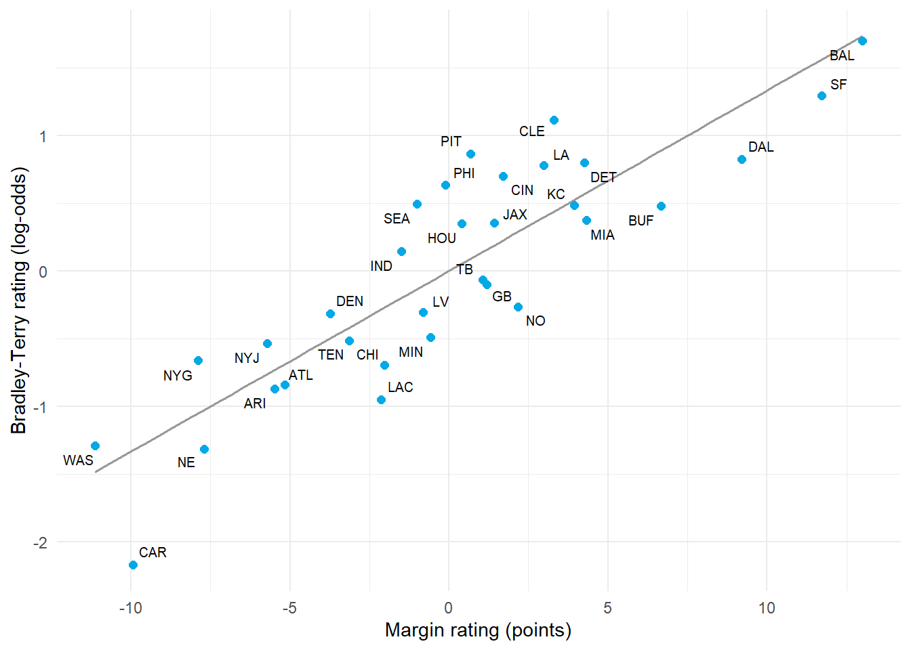

5.3 Win-Loss Ratings: Bradley-Terry and Logistic Models
Author
Hua Gong
1 Learning objectives
After this tutorial, you should be able to:
write the Bradley-Terry model and show that it is a logistic regression on the design matrix;
fit it with and without a home-advantage term and interpret ratings on the log-odds scale;
recognize the separation problem and fix it with a prior;
show that the Elo expected score is a Bradley-Terry probability and that the Elo update is a gradient step on its log-likelihood;
extend the model to ordered outcomes for sports with draws; and
compare win-loss ratings with margin-based ratings on held-out games.
2 The Bradley-Terry model
Assign each team a positive strength and let
Writing gives
where is the logistic function. The probability depends only on the difference in ratings, so a constant can be added to every without changing anything: the same identification issue as in Tutorial 5.2, resolved the same way.
With a home advantage and the design matrix of Tutorial 5.2,
which is a logistic regression with no intercept, one column for home field, and the team columns. Everything we know about logistic regression applies: the log-likelihood
is concave, maximum likelihood is a standard glm() call, and the coefficients are log-odds.
2.1 Fit on the 2023 NFL season
Ties are rare in the NFL and there were none in 2023; when they occur, the usual choices are to drop them or count each as half a win for both teams.
decided <- games_2023 %>%filter(tie ==0)X <-build_design_matrix(decided)home <-1- decided$neutral_site# Drop one column (reference team) to make the design full rank.design <-data.frame(home_win = decided$home_win, home = home, X[, -1])bt_fit <-glm(home_win ~0+ ., data = design, family =binomial())bt_ratings <-c(0, coef(bt_fit)[-1])names(bt_ratings) <-colnames(X)bt_ratings <- bt_ratings -mean(bt_ratings)data.frame(team =names(bt_ratings), rating = bt_ratings) %>%arrange(desc(rating)) %>%slice_head(n =10) %>% knitr::kable(digits =2, row.names =FALSE)
A rating difference of log-odds corresponds to a win probability of : a difference of 1 gives 73%, of 2 gives 88%. The home term says that two equal teams give the home side a modest edge.
ggplot(both, aes(margin, bradley_terry)) +geom_smooth(method ="lm", se =FALSE, color ="gray60", linewidth =0.6) +geom_point(color ="#03a9e6", size =2) + ggrepel::geom_text_repel(aes(label = team), size =2.6) +labs(x ="Margin rating (points)", y ="Bradley-Terry rating (log-odds)") +theme_minimal()

Bradley-Terry ratings (log-odds) against least-squares margin ratings (points).
The two agree strongly but not perfectly. Teams above the line won more games than their margins predict. The slope relates the two scales: because , a one-point margin rating is worth roughly log-odds when the margin noise is points.
NoteWhich is better?
The margin model uses more information and its ratings are less noisy, which is why professional rating systems use margins whenever they are available. The Bradley-Terry model is the right tool when only wins and losses are recorded or when margins are unreliable, as in sports with running up the score or garbage time.
3 The separation problem
Early in a season, some team has won every game. Maximum likelihood then tries to send that team’s rating to , because no finite value makes the probability of its record equal to one. The same happens whenever the teams can be split into two groups where every game between the groups was won by the same side.
early <- games_2023 %>%filter(week <=5, tie ==0)X_early <-build_design_matrix(early)design_early <-data.frame(home_win = early$home_win, home =1- early$neutral_site, X_early[, -1])early_fit <-suppressWarnings(glm(home_win ~0+ ., data = design_early, family =binomial()))early_ratings <-c(0, coef(early_fit)[-1])names(early_ratings) <-colnames(X_early)data.frame(team =names(early_ratings), rating = early_ratings -mean(early_ratings)) %>%arrange(desc(rating)) %>%slice(c(1:4, 29:32)) %>% knitr::kable(digits =1, row.names =FALSE)
team
rating
PHI
36.3
SF
21.8
TB
17.6
LA
2.7
CHI
-4.4
DEN
-4.6
MIN
-20.3
CAR
-38.9
Ratings in the tens of log-odds are meaningless: they say an undefeated team would beat an average team with probability indistinguishable from one after five games. A prior fixes this in exactly the way it fixed the plus-minus problem in Lecture 4.
3.1 A Bayesian Bradley-Terry model
Put on every rating. The posterior mode is a penalized logistic regression; the full posterior is available from rstanarm. A prior standard deviation of 1 log-odds says that before the season, a typical team beats an average team somewhere between 27% and 73% of the time, which is a reasonable statement about the NFL.
The prior keeps every rating finite and the posterior standard deviations say how little five games establish. Including all 32 team columns is now fine: the prior identifies the level, so no reference team is needed.
4 Elo is an online Bradley-Terry model
The Elo system computes the expected score of team against team as
and after the game updates , where is 1 for a win, 0 for a loss, and 0.5 for a tie.
Two facts connect this to the model above.
The expected score is a Bradley-Terry probability. Since ,
so . An Elo gap of 400 points is a rating difference of about 2.3 log-odds, or a 91% win probability.
The update is a gradient step. The derivative of one game’s log-likelihood with respect to is
where . The Elo update adds , which is a step of size along that gradient. Elo is therefore stochastic gradient ascent on the Bradley-Terry log-likelihood, processing one game at a time and never revisiting old games. The constant controls how fast ratings respond, and Tutorial 5.5 shows that it plays the same role as the innovation variance of a state-space model.
A soccer match has three outcomes. Order them as away win draw home win and let . The cumulative logit (proportional odds) model places two thresholds on the latent scale:
with , so that and . The gap controls how often draws occur. When the model collapses to Bradley-Terry.
which reproduces the league-wide frequencies of Tutorial 5.1. An alternative with the same purpose is Davidson’s extension of Bradley-Terry, which adds a draw parameter so that . Tutorial 5.4 takes a different route and models the goals themselves.
6 Held-out comparison
Fit the Bradley-Terry and margin models on weeks 1 through 14 of 2023 and score their home-win probabilities on weeks 15 through 18. To avoid the separation problem in the training window, the Bradley-Terry fit uses a mild ridge penalty implemented as the posterior mode with .
train <- games_2023 %>%filter(week <=14, tie ==0)test <- games_2023 %>%filter(week >=15, tie ==0)X_train <-build_design_matrix(train, teams =colnames(X))X_test <-build_design_matrix(test, teams =colnames(X))# Penalized logistic regression by Newton's method: the posterior mode with# a N(0, tau^2) prior on every team rating and a N(0, 3^2) prior on home field.penalized_logistic <-function(A, y, prior_sd) { beta <-rep(0, ncol(A)) penalty <-diag(1/ prior_sd^2)for (iteration inseq_len(50)) { p <-plogis(as.numeric(A %*% beta)) gradient <-as.numeric(t(A) %*% (y - p)) - penalty %*% beta hessian <-t(A) %*% (A * (p * (1- p))) + penalty step <-solve(hessian, gradient) beta <- beta +as.numeric(step)if (max(abs(step)) <1e-8) break } beta}A_train <-cbind(home =1- train$neutral_site, X_train)bt_beta <-penalized_logistic(A_train, train$home_win, prior_sd =c(3, rep(1, ncol(X_train))))bt_probability <-plogis(as.numeric(cbind(1- test$neutral_site, X_test) %*% bt_beta))margin_train <-ridge_ratings(train, lambda =7)margin_prediction <- margin_train$home_advantage * (1- test$neutral_site) + margin_train$ratings[test$home_team] - margin_train$ratings[test$away_team]margin_probability <-pnorm(margin_prediction /13)data.frame(model =c("Bradley-Terry (penalized)", "ridge on margins"),log_loss =c(log_loss(test$home_win, bt_probability), log_loss(test$home_win, margin_probability)),brier =c(brier_score(test$home_win, bt_probability), brier_score(test$home_win, margin_probability))) %>% knitr::kable(digits =3)
model
log_loss
brier
Bradley-Terry (penalized)
0.655
0.230
ridge on margins
0.635
0.223
The margin model usually scores better because it has seen more information per game, but in a single late-season window of about 60 games the gap is within noise. Tutorial 5.6 evaluates both across full seasons.
7 Practice
Two teams have Bradley-Terry ratings 0.8 and . What is the probability that the first beats the second on a neutral field?
Explain why maximum likelihood fails for an undefeated team but a posterior mode with a normal prior does not.
Convert an Elo difference of 100 points to a log-odds difference and a win probability.
In the cumulative logit model, what happens to the draw probability as grows?
TipShow answers
.
The likelihood increases monotonically as the undefeated team’s rating grows, so it has no maximum; the prior adds a penalty that grows without bound, so the posterior has a finite mode.
log-odds; .
It goes to zero: a very strong favorite rarely draws, because both thresholds sit on the same side of .
8 Key takeaways
Bradley-Terry is logistic regression on the design; ratings are log-odds.
Undefeated teams break maximum likelihood; a normal prior restores finite, interpretable ratings.
Elo’s expected score is a Bradley-Terry probability and its update is a gradient step with step size .
Ordered-outcome models handle draws with thresholds on the latent scale.
Margin models extract more information per game; win-loss models are for when margins are unavailable or untrustworthy.